- Introduction
- The Problem with Nonlinearity
- An Intuitive Look at the Problem
- The Effect of Nonlinear Functions on Gaussians
Nonlinear Filtering
충북대학교 지능로봇공학과 문성태 교수
Contents
- A 2D Example
- The Algorithms
- Summary
Sources of Nonlinearity
- 선형 Kalman filter: 선형 방정식 기반, 선형 문제만 처리 가능, 비선형인 실제 세계에서는 활용이 제한됨
- process model: 대기 중 낙하 물체, 항력은 공기 밀도에 비례하고 공기 밀도는 고도가 높을수록 감소
- measurement: radar 는 물체까지의 slant range 를 측정, 관심 대상은 지면 위 위치, 피타고라스 정리로 변환
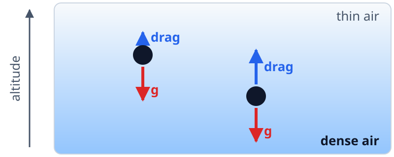
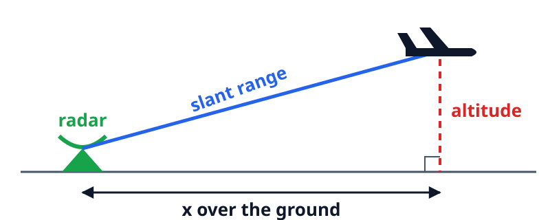
Linearization
- Ax = b: 확실하게 풀 수 있는 것은 사실상 선형 방정식뿐, 해를 구하거나 해가 없음을 증명
- 해석해의 한계: 간단한 물리계도 해석해가 없는 경우가 대부분, log 항 하나만 추가해도 적분 불가
- 선형화: 공기 흐름, 기상 예측, 미사일 추적 모두 문제를 선형 방정식으로 바꿔 근사해 계산
- 오차 누적: 선형화는 부정확한 답, Kalman filter 같은 재귀 알고리즘에서 작은 오차가 서로 강화
- 발산: 수치 오차가 해를 압도하는 필터 발산(divergence)과 계속 싸워야 하는 문제
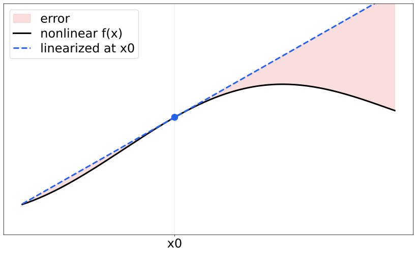
핵심: 명확한 최적해가 없음, 문제의 비선형성이 일으키는 구체적 문제를 이해한 뒤에 필터 설계
Linearity
- Gaussian 의 특별함: Gaussian 자체는 비선형이지만 두 Gaussian 을 더하거나 곱하면 다시 Gaussian, 매우 드문 성질
- 반례: 는 sin 함수가 아님, 대부분의 함수는 연산 후 같은 꼴을 유지하지 못함
- 선형의 두 조건: 가법성(additivity)과 동차성(homogeneity), 출력이 모든 입력의 합에 비례
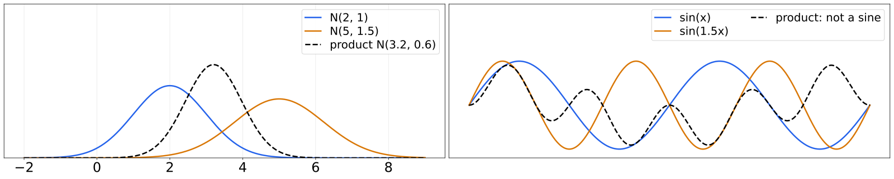
Zero Input, Zero Output
- 결과: 선형이면 입력이 0 일 때 출력도 0
- 앰프 예: 두 사람의 목소리를 앰프에 넣으면 출력은 두 목소리의 합에 gain 을 곱한 값
- 잡음: 입력이 0 인데 hum 같은 0 이 아닌 출력이 나오면 가법성이 깨짐
- 모순: amp(0) 이 0 이 아니면 위 식이 성립하지 않음
- 주의: 겉보기에 선형인 L(f(t)) = f(t) + 1 도 L(0) = 1 이므로 선형이 아님
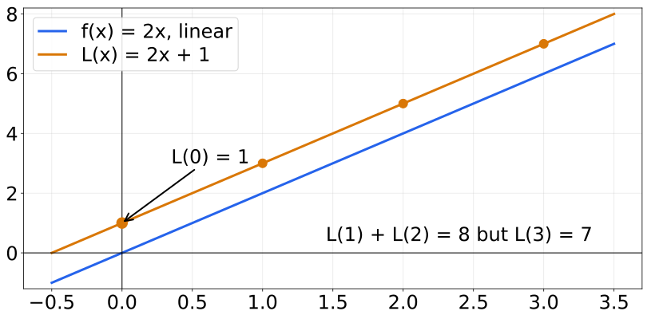
핵심: 직선 모양이라도 원점을 지나지 않으면 가법성이 깨짐, 선형 여부는 두 조건으로 판단
Range and Bearing
- 상황: radar 가 목표물까지의 거리(range)와 각도(bearing)를 측정, 목표물의 위치를 추적
- 측정: 거리 50 km, 각도 90°, 두 오차 모두 Gaussian 분포
- 질문: 측정을 무한히 반복하면 위치의 기대값은 어디인가
- 직관: 거리 평균 50 km, 각도 평균 90° 이므로 x = 0 km, y = 50 km 로 예상
- 실험: 거리 표준편차 0.4 km, 각도 표준편차 0.35 rad 의 측정점을 생성해 평균 계산
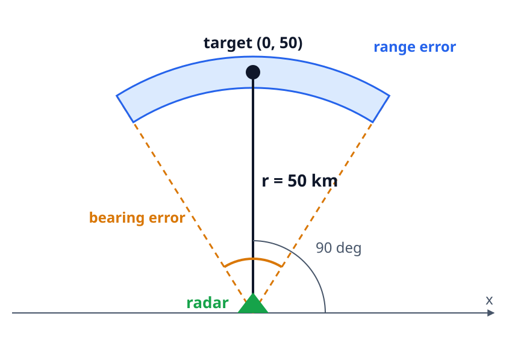
Intuition versus Mean
- 거리 50 km, 각도 90° 의 측정에 Gaussian 잡음을 넣은 5000 개 점을 x, y 로 변환해 표시
- 큰 원(Intuition)은 직관의 답 (0, 50), 별(Mean)은 모든 점의 평균, 평균이 원보다 아래에 위치
- 비선형 변환이 모든 오차를 한 방향으로 치우치게 만듦, 반복되면 필터 발산의 원인
- 조건: 거리 N(50, 0.4^2) km, 각도 N(pi/2, 0.35^2) rad, N = 5000
import numpy as np from numpy.random import randn import matplotlib.pyplot as plt N = 5000 a = np.pi/2. + (randn(N) * 0.35) r = 50.0 + (randn(N) * 0.4) xs = r * np.cos(a) ys = r * np.sin(a) plt.scatter(xs, ys, label='Sensor', color='k', alpha=0.4, marker='.', s=1) xmean, ymean = sum(xs) / N, sum(ys) / N plt.scatter(0, 50, c='k', marker='o', s=200, label='Intuition') plt.scatter(xmean, ymean, c='r', marker='*', s=200, label='Mean') plt.axis('equal'); plt.legend();
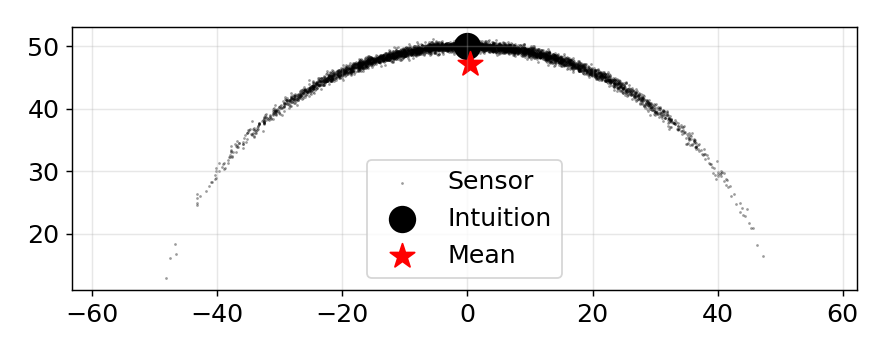
Changing the Noise
- 거리 표준편차 std_r, 각도 표준편차 std_a 를 바꾸며 평균(별)의 위치 관찰, 제목은 평균의 y 값
- 각도 오차가 커질수록 평균이 직관(원)에서 아래로 멀어짐, 거리 오차만 키우면 평균은 거의 그대로
- 조건: std_r 0.1 ~ 5 km, std_a 0.05 ~ 1 rad, N = 5000
from ipywidgets import interact, FloatSlider def plot_polar(std_r, std_a): N = 5000 a = np.pi/2. + (randn(N) * std_a) r = 50.0 + (randn(N) * std_r) xs, ys = r * np.cos(a), r * np.sin(a) plt.scatter(xs, ys, color='k', alpha=0.4, marker='.', s=1) plt.scatter(0, 50, c='k', marker='o', s=200, label='Intuition') plt.scatter(np.mean(xs), np.mean(ys), c='r', marker='*', s=200, label='Mean') plt.title('mean y = {:.2f} km'.format(np.mean(ys))) plt.xlim(-55, 55); plt.ylim(0, 60); plt.legend(loc=3) plt.gca().set_aspect('equal'); interact(plot_polar, std_r=FloatSlider(value=0.4, min=0.1, max=5, step=0.1), std_a=FloatSlider(value=0.35, min=0.05, max=1, step=0.05));
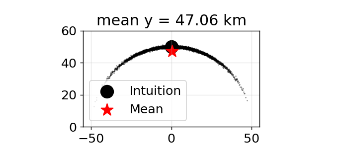
Linear Function
- Gaussian 500,000 개 점을 선형 함수 f(x) = 2x + 1 에 통과시키고 입력, 함수, 출력을 함께 표시
- 빨간 선은 입력 평균 x = 0 이 함수를 거쳐 가는 경로, 주황 점선은 출력 점들의 평균
- 출력도 Gaussian, 2x 는 분산을 키우고 +1 은 평균을 0 에서 1 로 이동, 두 평균선이 거의 일치
- 조건: 입력 N(0, 1), 500,000 개, f(x) = 2x + 1
from numpy.random import normal data = normal(loc=0., scale=1., size=500000) def g1(x): return 2*x+1 plots.plot_nonlinear_func(data, g1)
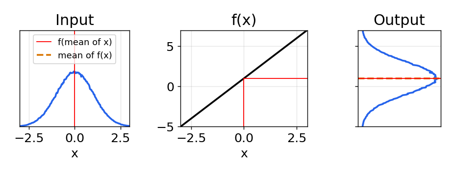
Nonlinear Function
- 같은 입력을 직선에 가까워 보이는 비선형 함수 g2 에 통과, 출력 분포는 Gaussian 과 전혀 다른 모양
- Gaussian 곱 공식 , 은 이런 분포에 성립하지 않음
- 조건: 입력 N(0, 1), 500,000 개, g2(x) = cos(3(x/2 + 0.7)) sin(0.3x) - 1.6x
from numpy.random import normal data = normal(loc=0., scale=1., size=500000) def g2(x): return (np.cos(3*(x/2 + 0.7))) * np.sin(0.3*x) - 1.6*x plots.plot_nonlinear_func(data, g2)
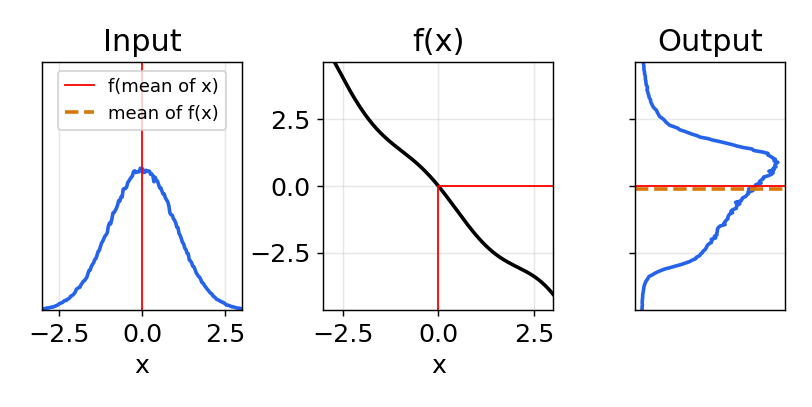
Scatter View
- 같은 데이터 중 30,000 개를 가로축에 값, 세로축에 순번으로 찍어 입력과 출력을 비교
- 입력은 0 을 중심으로 고르게 퍼진 Gaussian, 출력은 -3 근처에 짙은 띠가 생기고 양쪽이 비대칭
- 이 띠의 모양이 g2 출력 분포(Output)의 모양과 일치
- 조건: 입력 N(0, 1), 처음 30,000 개, g2 적용
N = 30000 plt.subplot(121) plt.scatter(data[:N], range(N), alpha=.1, s=1.5) plt.title('Input') plt.subplot(122) plt.title('Output') plt.scatter(g2(data[:N]), range(N), alpha=.1, s=1.5);
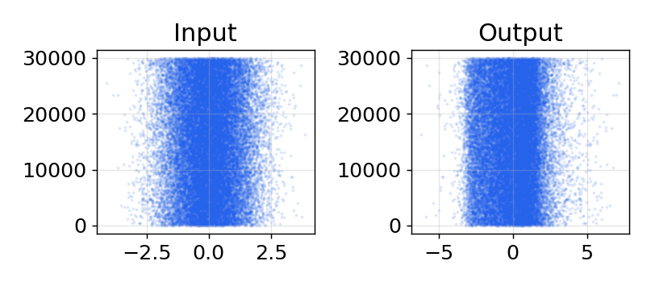
Second Pass
- Kalman filter 의 다음 단계처럼 g2 의 출력을 다시 g2 에 통과시켜 분포 변화 확인
- 분포가 원래 Gaussian 에서 더 크게 왜곡, 그래도 x = 0 근처에서 어느 정도 대칭
- Kalman filter 의 모든 식은 Gaussian 이 process 함수를 거쳐도 Gaussian 이라는 가정 위에 성립
- 조건: y = g2(data), 입력과 출력의 평균, 분산 출력
y = g2(data) plots.plot_nonlinear_func(y, g2) print('input mean, variance: %.4f, %.4f' % (np.mean(data), np.var(data))) print('output mean, variance: %.4f, %.4f' % (np.mean(y), np.var(y)))
input mean, variance: -0.0015, 1.0019
output mean, variance: -0.1225, 2.4093
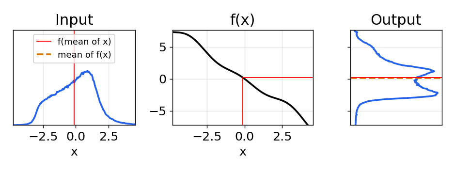
Linear Approximation
- g2 와 매우 가까운 직선, 즉 (-2, 3) 과 (2, -3) 을 지나는 직선 g3 으로 같은 실험 반복
- 출력 모양은 g2 와 전혀 다르지만 평균과 분산은 g2 의 결과와 거의 같음
- 조건: 입력 N(0, 1), 500,000 개, 기울기
def g3(x): return -1.5 * x plots.plot_nonlinear_func(data, g3) out = g3(data) print('output mean, variance: %.4f, %.4f' % (np.mean(out), np.var(out)))
output mean, variance: 0.0023, 2.2543
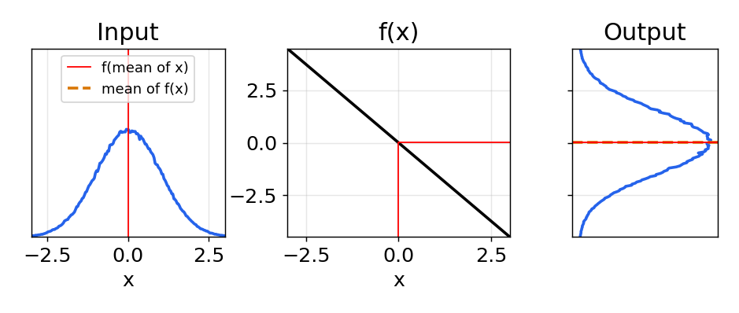
Iterating Ten Times
- 함수가 직선에 가깝다면 무시해도 되는지 확인하기 위해 g3 (직선)과 g2 (비선형)를 10 번 반복 적용
- 선형 결과의 평균은 0 근처에 머무르지만 비선형 결과는 평균이 크게 이동하고 분산도 훨씬 커짐
- 직선에 가까운 함수를 골라 문제를 줄인 경우에도 비선형 반복은 불안정
- 조건: 입력 N(0, 1), 500,000 개, 10 회 반복, 분산은 log 축
def g3(x): return -1.5 * x out, out2 = g3(data), g2(data) lin, nonlin = [], [] for i in range(10): out, out2 = g3(out), g2(out2) lin.append((np.average(out), np.std(out)**2)) nonlin.append((np.average(out2), np.std(out2)**2)) lin, nonlin = np.array(lin), np.array(nonlin) fig, ax = plt.subplots(2, 1, sharex=True) ax[0].plot(lin[:, 0], 'o-', label='linear') ax[0].plot(nonlin[:, 0], 's-', label='nonlinear') ax[0].set_ylabel('mean'); ax[0].legend(); ax[1].semilogy(lin[:, 1], 'o-'); ax[1].semilogy(nonlin[:, 1], 's-') ax[1].set(xlabel='iteration', ylabel='variance');
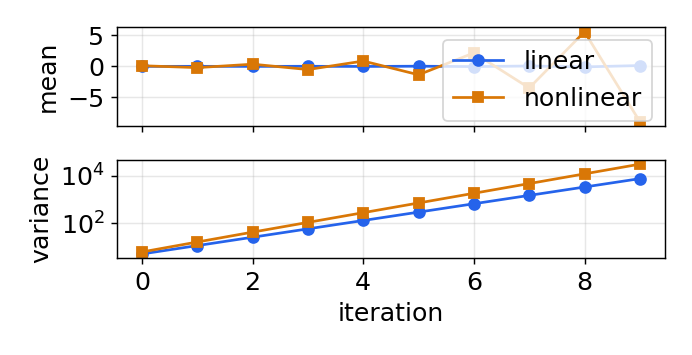
Parabola
- 포물선 y(x) = -x^2 에 평균 1 의 Gaussian 을 통과, 탄도 물체의 궤적과 같은 흔한 비선형
- 곡선은 x = 1 근처에서 매끄럽고 꽤 직선 같지만 출력은 Gaussian 과 전혀 다른 모양
- 출력 평균(주황 점선)이 입력 평균을 직접 넣은 값 f(1) = -1 (빨간 선)과 크게 다름
- 조건: 입력 N(1, 1), 500,000 개, f(x) = -x^2
def g3(x): return -x*x data = normal(loc=1, scale=1, size=500000) plots.plot_nonlinear_func(data, g3)
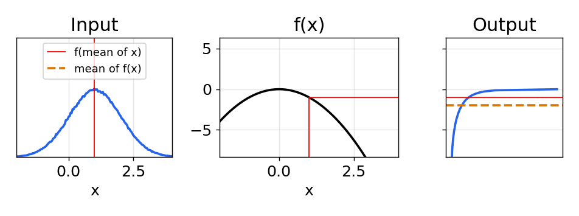
Changing the Input
- 포물선에 넣는 Gaussian 의 평균 mean 과 표준편차 std 를 슬라이더로 바꾸며 출력 분포 관찰
- std 가 작으면 출력이 Gaussian 에 가깝고 두 평균선이 일치, std 가 크거나 mean 이 0 에 가까우면 왜곡
- 조건: mean -2 ~ 2, std 0.1 ~ 2, 100,000 개, f(x) = -x^2
from ipywidgets import interact, FloatSlider def g3(x): return -x*x def plot_parabola(mean, std): data = normal(loc=mean, scale=std, size=100000) plots.plot_nonlinear_func(data, g3) interact(plot_parabola, mean=FloatSlider(value=1, min=-2, max=2, step=0.1), std=FloatSlider(value=1, min=0.1, max=2, step=0.1));
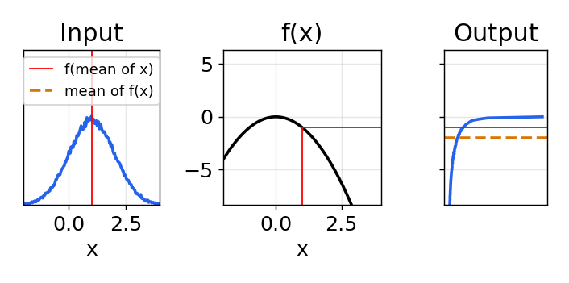
Covariance and Range
- radar 로 항공기를 추적하는 상황, 현재 추정은 (10, 2) km 에 기울어진 공분산 타원(초록)으로 표현
- radar 는 항공기 바로 아래 (10, 0) 에 있고 다음 측정이 거리 3 km, 이를 만족하는 위치는 반지름 3 km 의 원
- 타원과 원이 겹치는 x = 11.4, y = 2.7 근처가 항공기의 가장 그럴듯한 위치
- 조건: 추정 평균 (10, 2), 공분산 P, radar (10, 0), 측정 거리 3 km
P = np.array([[6, 2.5], [2.5, 1.2]]) stats.plot_covariance((10, 2), P, facecolor='g', alpha=0.2, axis_equal=False) # positions that match the range measurement circle = plt.Circle((10, 0), 3, color='#004080', fill=False, linewidth=4, alpha=.7) plt.gca().add_artist(circle) plt.scatter(10, 0, marker='^', s=300, c='g', label='radar') plt.gca().set_aspect('equal') plt.xlim(7, 13); plt.ylim(-0.2, 3.4); plt.legend(loc=3);
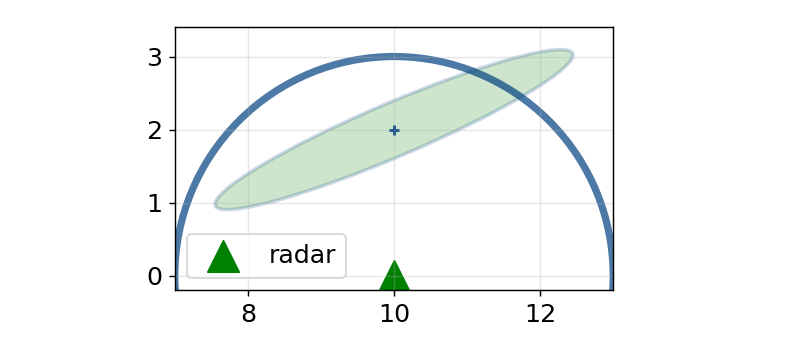
Linearizing the Measurement
- 거리 측정은 비선형이므로 마지막 추정 위치 (10, 2) 에서 선형화, x = 10 에서 측정 원은 y = 3
- 선형화된 측정은 직선 y = 3 (점선), 이 직선과 타원으로 구한 추정(빨강)은 실제 위치(파랑)에서 멀리 떨어짐
- 다음 단계는 이 나쁜 추정에서 다시 선형화, 몇 번의 반복만에 필터가 발산할 수 있음
- 조건: 선형화 지점 (10, 2), 선형화 추정 (12, 3), 실제 근처 위치 (11.4, 2.65)
plot_problem() # linearized range measurement at x = 10 plt.axhline(3, ls='--') plt.scatter([11.4], [2.65], s=200, label='actual') plt.scatter([12], [3], c='r', s=200, label='linearized') plt.legend(loc=3);
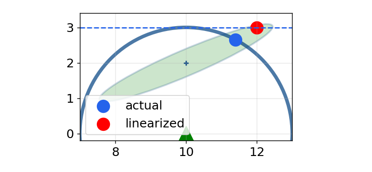
Linearization Point
- 선형화 지점(검은 x) 에서 거리 함수의 접선으로 측정을 선형화, 추정은 직선과 원 위에서 Mahalanobis 거리가 가장 작은 점
- 선형화 지점이 실제 위치 (11.4, 2.6) 에 가까울수록 오차(제목)가 줄고, 멀리서 선형화하면 오차가 커짐
- 조건: x_lin 8 ~ 12, y_lin 1 ~ 3, 측정 거리 3 km, 추정 평균 (10, 2), 원과 Mahalanobis 함수는 미리 정의
from ipywidgets import interact, FloatSlider def plot_linearize(x_lin, y_lin): x0 = np.array([x_lin, y_lin]) d0 = np.linalg.norm(x0 - radar) H = (x0 - radar) / d0 # gradient of the range line = x0 + H*(rng - d0) + t*np.array([-H[1], H[0]]) est, act = closest(line), closest(circle) plot_problem() plt.plot(line[:, 0], line[:, 1], 'C0--') plt.scatter(*x0, marker='x', s=200, c='k') plt.scatter(*act, s=200, label='actual') plt.scatter(*est, c='r', s=200, label='linearized') plt.title('error = %.2f km' % np.linalg.norm(est - act)) plt.legend(loc=3, fontsize=11); interact(plot_linearize, x_lin=FloatSlider(value=10, min=8, max=12, step=.1), y_lin=FloatSlider(value=2, min=1, max=3, step=.1));
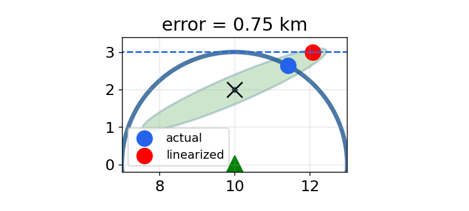
Three Approaches
| Idea | Strength | Cost | |
|---|---|---|---|
| Linearized KF, EKF | 한 점에서 선형화, 편미분 행렬(Jacobian) 계산 | 오랜 표준 기법, 항공기 비행 소프트웨어, GPS | Jacobian 계산이 어렵고 오차 증가, 강한 비선형에서 발산 |
| Particle filter | 수천 개의 무작위 점을 측정과 비교, 잘 맞는 점만 복제 | 극도의 비선형에 강인, 여러 물체 동시 추적 | 계산량 큼, 엄밀한 공분산 없음, 점 구름 해석 필요 |
| UKF | 해석해 없이 몇 개의 sigma point 로 비선형 변환 | 대부분 EKF 보다 정확, 설계가 쉬움 | EKF 보다 수 배 느릴 수 있음, 수치 Jacobian EKF 보다는 빠름 |
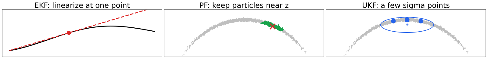
Comparing on Range and Bearing
- 예: 거리 50 km, 각도 90° 측정의 Gaussian 을 x, y 로 변환한 결과를 세 방식으로 비교
- particles: 무작위 점을 직접 변환한 분포(회색)와 평균(검은 별), 기준 역할
- linearized (EKF): 평균점의 Jacobian 으로 변환(빨강), 평균이 위로 치우치고 휜 분포를 놓침
- unscented (UKF): 몇 개의 점만 변환(파랑), 평균과 공분산이 기준에 훨씬 가까움
- 타원: 각 방식으로 구한 1 sigma 공분산 타원
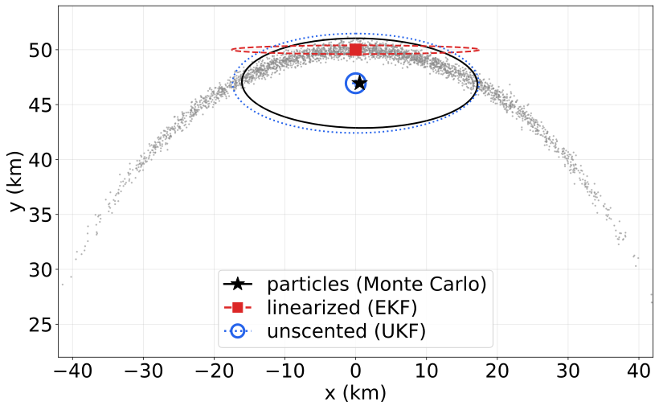
권장: 전문가가 아니라면 UKF 를 출발점으로, 항상 더 정확하다는 증명은 없지만 실제로는 대부분 우수
Summary
- 문제: 실제 세계는 비선형, 확실히 풀 수 있는 것은 선형 문제뿐
- 세 관점: 편향된 평균, Gaussian 이 아닌 출력, 선형화 오차, 같은 문제를 보는 세 방식
- EKF: 오랜 표준이지만 이해와 사용이 어렵고 불안정할 수 있음
- UKF, particle filter: 구현과 이해가 쉽고 대개 더 안정적, UKF 를 출발점으로
결론: 비선형 필터는 근사와 발산의 싸움, 문제의 비선형성을 먼저 이해하고 기법 선택
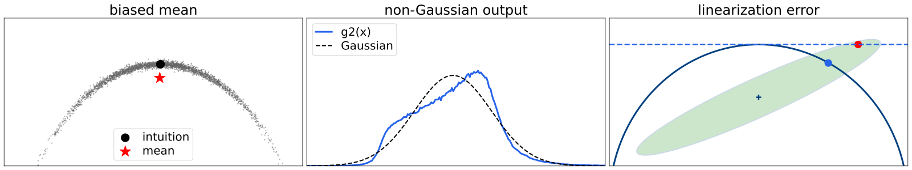